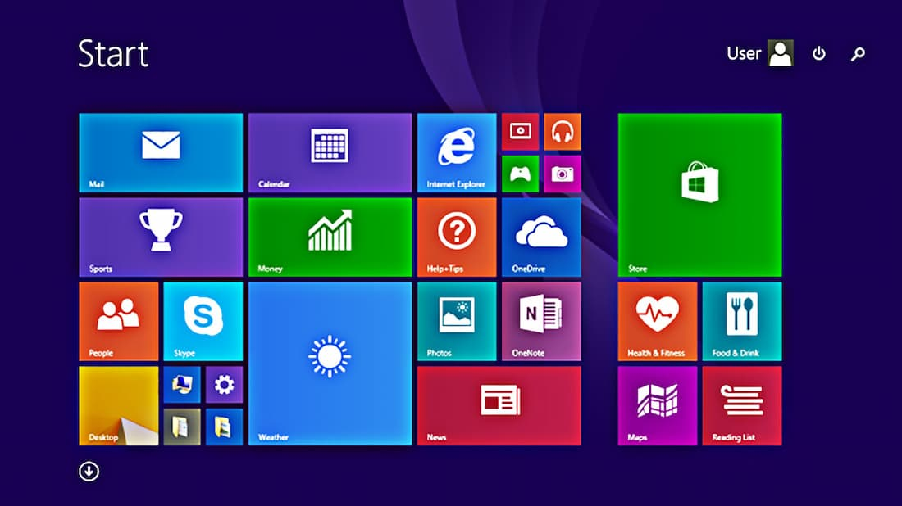

Windows 8.1
O Windows 8.1 é um sistema operacional desenvolvido pela Microsoft, lançado como sucessor direto do Windows 8 em outubro de 2013. Ele representa uma evolução do Windows 8, trazendo melhorias, ajustes e algumas novas características para a experiência do usuário. Aqui está uma descrição geral do Windows 8.1:
Interface Moderna e Inicialização Rápida: O Windows 8.1 manteve a interface Moderna (anteriormente conhecida como Metro) introduzida no Windows 8. Essa interface apresenta blocos coloridos dinâmicos que exibem informações atualizadas em tempo real, chamados de "Azulejos". O sistema inicializa rapidamente, permitindo que os usuários acessem seus aplicativos e configurações de maneira mais ágil.
Botão Iniciar e Barra de Tarefas: O Windows 8.1 reintroduziu o botão Iniciar na barra de tarefas, embora tenha sido um pouco diferente das versões anteriores do Windows. Ao clicar nele, os usuários tinham acesso a uma visão semelhante ao Menu Iniciar das versões anteriores.
Personalização: O sistema permitia uma personalização mais profunda da tela Inicial, incluindo a capacidade de redimensionar os blocos, escolher diferentes cores e imagens de fundo e organizar os aplicativos e azulejos da forma desejada.
Aplicativos Modernos: O Windows 8.1 incentivava o uso de aplicativos Modernos (também conhecidos como apps da Windows Store), que foram otimizados para dispositivos com tela sensível ao toque e tinham uma interface mais limpa e voltada para o toque. A Windows Store oferecia uma variedade de aplicativos para download.
Melhorias no Desktop: O Windows 8.1 trouxe várias melhorias para os usuários que preferiam a experiência do desktop tradicional. Foram feitos ajustes para tornar a transição entre a interface Moderna e o desktop mais fluida e agradável.
Busca Unificada: A busca no Windows 8.1 foi unificada, permitindo que os usuários pesquisassem por aplicativos, arquivos e configurações diretamente da tela Inicial. A pesquisa também retornava resultados online e na Web.
Recursos de Multitarefa: O Windows 8.1 permitia que os usuários dividissem a tela entre dois aplicativos, facilitando a multitarefa. Também foi possível mover aplicativos Modernos para exibir várias janelas lado a lado no desktop.
Suporte a Múltiplos Dispositivos: O Windows 8.1 foi projetado para funcionar em uma variedade de dispositivos, desde PCs tradicionais a tablets e dispositivos híbridos, oferecendo uma experiência coesa em diferentes telas.
Em resumo, o Windows 8.1 trouxe melhorias significativas em relação ao Windows 8, atendendo às preocupações dos usuários e aprimorando a experiência do usuário, especialmente para aqueles que usavam dispositivos com tela sensível ao toque. Ele procurou equilibrar a interface Moderna com a interface de desktop tradicional, oferecendo uma experiência mais integrada e versátil para uma variedade de dispositivos.
Baixar Iso Windows 8.1